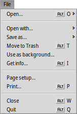
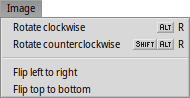

| Зміст |
| Файл Редагувати Перегляд Зображення Режим перегляду Атрибути Клавіші швидкого доступу |
 ShowImage (Демонстратор)
ShowImage (Демонстратор)
| Deskbar: | У меню не входить, запускається подвійним кліком на файлі, який підтримується програмою. | |
| Розташування: | /boot/system/apps/ShowImage | |
| Налаштування: | ~/config/settings/ShowImage_settings |
ShowImage (Демонстратор зображень) дозволяє переглядати зображення в усіх форматах, які підтримуються Трансляторами. Нові формати розпізнаються автоматично, коли до системи додається відповідний транслятор. Це було зроблено, наприклад, для файлів векторних значків Haiku, зображень WonderBrush або коли стали доступними зображення WebP.
ShowImage не надає функцій редагування, але дозволяє виділити прямокутну область і зберегти її в будь-якому форматі. Ви також можете обертати і перевертати зображення, але ці операції фізично не змінюють зображення. Вони лише додають атрибут, який вказує на автоматичний поворот або перевертання зображення при наступному відкритті.
Давайте пройдемося по пунктам меню, опускаючи очевидні речі.
 Файл
Файл

Підменю містить список останніх переглянутих зображень.
Підменю містить список програм, які підтримують цей тип файлу та дозволяє відкрити поточне зображення у будь-якій з них.
Підменю дозволяє вибрати формат для збереження поточного зображення.
Пункт відкриває панель налаштувань Backgrounds для швидкого встановлення поточного зображення в якості фону робочої області.
Редагувати

Коли активовано (також доступний у вигляді кнопки з пунктирним прямокутником на панелі інструментів), Ви можете виділити прямокутну область зображення, яку потім можна перетягнути та скинути на робочий стіл або у будь-яку папку, щоб зберегти її. При перетягуванні за допомогою правої кнопки миші, під час скидання фрагмента відобразиться меню, у якому можна вибрати формат збереження зображення.
Якщо Ви не хочете перемикатися між режимами, Ви можете виділити фрагмент рамкою у «звичайному режимі», просто утримуючи клавішу CTRL та перетягуючи курсор з натиснутою лівою кнопкою миші.
Пункт меню або клавіша ESC прибирає рамку та знімає виділення.
Перегляд

Після відкриття зображення Ви можете швидко переглядати усі інші зображення у поточній папці (або у вікні результатів запиту), натискаючи клавіші ↑/↓ або ←/→. Ви можете бачити, як відповідно змінюється підсвітка вибору файлу у вікні Tracker.
Існує швидкий спосіб відкрити папку з поточним зображенням і навіть перейти до його батьківської та вкладених папок. Це працює так само, як і навігація через деталізацію по підменю у Tracker, якщо натиснути на інформаційну область у рядку стану, яка показує розмір, масштаб і формат поточного зображення.
Якщо Ви подивитеся на меню , то побачите ще один тип перегляду: Деякі формати зображень, наприклад TIFF, можуть містити кілька сторінок в одному файлі. Команди та дають змогу переходити між цими сторінками.
Зображення
Меню пропонує декілька маніпуляцій із зображенням, необхідних для перегляду зображень: поворот та переворот зображення.
Зауважте, що фактичні дані зображення при цьому не змінюються. До файлу буде додано лише атрибут, за яким його буде показано повернутим або перевернутим при наступному відкритті.
Режим перегляду

Меню дозволяє запустити для усіх зображень у папці (або у вікні результатів запиту) і встановити від 2 до 20 секунд.
Інші команди застосовуються до поточного відкритого зображення (без зміни розміру вікна):
показує зображення у масштабі 100% .
підганяє зображення до рамок вікна, наприклад, після збільшення масштабу або зміни розміру вікна.
, змінює масштаб зображення з кроком 10%. Масштабування можна здійснити за допомогою коліщатка миші; щоб змінити панораму зображення більшого розміру, ніж вікно, просто натисніть ліву кнопку миші і перетягніть мишу.
Два параметра застосовуються не лише до поточного зображення, а й запам'ятовуються при переході від одного зображення до іншого:
застосовує дуже швидкий фільтр під час масштабування, щоб зменшити нерівні лінії і отримати більш плавний результат.
розтягує менші зображення, щоб заповнити увесь фрейм вікна.
У режимі з увімкненою опцією назва файлу накладається на зображення у нижній частині екрана.
Нарешті, пункт меню показує/приховує графічні елементи управління:

Зліва направо: попереднє зображення, наступне зображення, запуск слайд-шоу (у повноекранному режимі), режим виділення, оригінальний розмір, припасувати до вікна, збільшити, зменшити, попередня і наступна сторінки (якщо формат зображення, наприклад, TIFF, дозволяє зберігати кілька сторінок в одному файлі).
Більшість команд меню, які часто використовуються, також доступні у контекстному меню правої кнопки миші в області зображення. Це дуже зручно у повноекранному режимі.
Атрибути

За допомогою пункту меню Ви можете оцінити поточне зображення у діапазоні від 1 до 10, тобто встановити його рейтинг, або вибрати пункт , щоб встановити значення «без рейтингу» (= 0).
Файловий менеджер Tracker відображає рейтинг у колонці атрибута «Rating» (Рейтинг) у вигляді зірок. П'ять зірок представляють 10 можливих значень, що відповідає кроку в півзірки. Наприклад, рейтинг 7 відображається як 7 / 2 = 3,5 зірки: ★★★⯪☆.
Ви можете редагувати рейтинг безпосередньо у програмі Tracker: Виділіть файл, виберіть пункт у меню і натискаючи клавішу TAB перейдіть у колонку «Rating». Тепер Ви можете ввести нове числове значення, яке після натискання клавіші ENTER перетвориться на зірочки рейтингу.
Клавіші швидкого доступу
Ось декілька корисних комбінацій клавіш:
| ← / ↑ | попереднє зображення | |
| → / ↓ | наступне зображення | |
| DEL | перемістити до Смітника | |
| + | збільшити | |
| - | зменшити | |
| 0 | оригінальний розмір (масштаб 100%) | |
| 1 | припасувати до розміру вікна | |
| ALT ENTER | перемикання повноекранного режиму (також подвійним кліком) | |
| CTRL | утримуючи клавішу CTRL, Ви можете створити рамку виділення без явного переходу у режим виділення. |